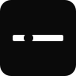

Three fundamentally different directions. Restrained. No gradients, no generic shields. Each one commits to a single strong idea.
No icon. The brand is the typography. The dot of the "i" is removed and replaced with a single horizontal stroke above the letter — a "plane" cue that reads as a horizon, not as a dot. The Linear / Stripe / Vercel approach: the wordmark IS the logo. Scales to anything, ages well, never looks dated. Strongest enterprise signal of the set.
A single bold geometric mark: a black square with a horizontal slit cut through it. The slit is the "plane" — the layer where identity lives. Inside the slit, a single dot — the identity, sitting on the plane. Reads as a logo at 16px and at 1024px. The Vercel / Resend approach: one shape, one idea, one color.

mark only
Square brackets [ ] enclosing a green horizontal stroke. The brackets are the platform boundary (the protected space). Inside: a single identity record. Reads instantly to developers — it speaks their language (code). The accent color is the only color in the entire brand, so it gets to do real work.